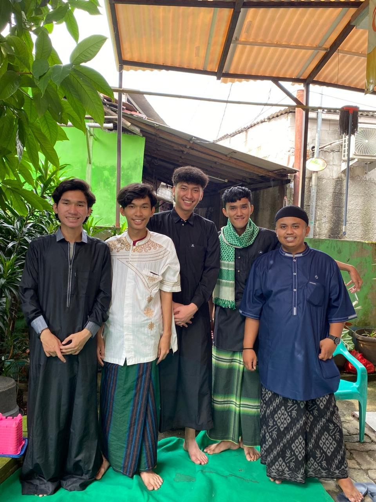
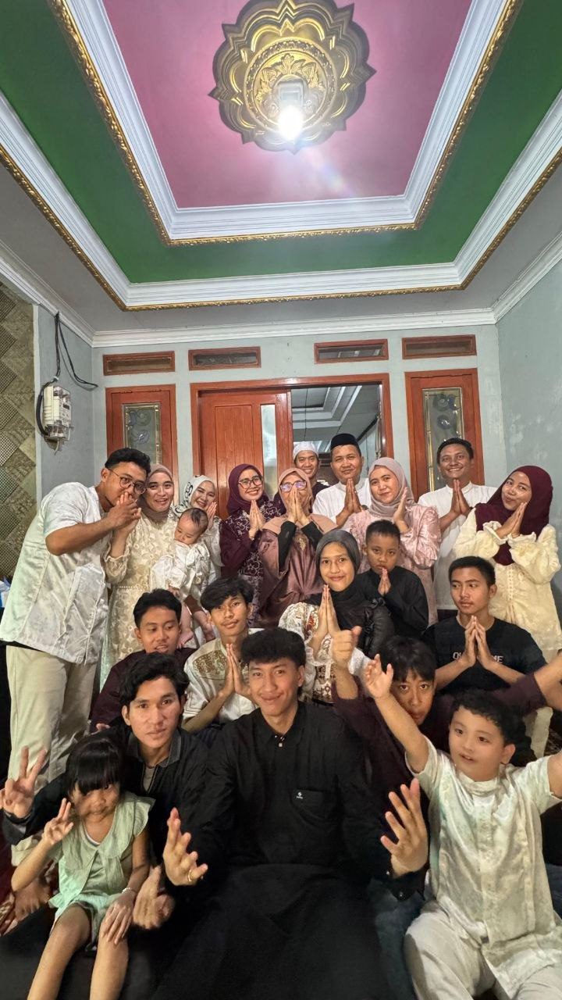
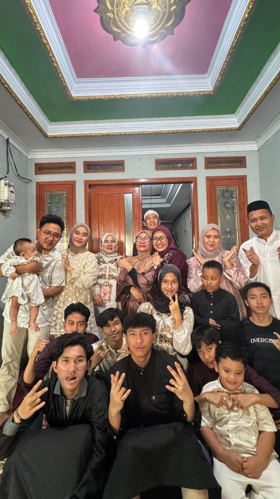

Pada perayaan Idul Fitri tahun ini,saya memiliki pengalaman yang sangat berkesan bersama keluarga. Salah satu momen yang paling saya ingat adalah saat acara kumpul keluarga di rumah nenek. Pada hari pertama Lebaran, setelah melaksanakan salat Id, saya dan keluarga langsung pergi ke rumah nenek. Di sana, seluruh anggota keluarga dari berbagai daerah berkumpul. Rasanya tuh campur aduk antara haru, bahagia, dan sedikit "kacau" yang menyenangkan. Bayangin aja, rumah jadi penuh sesak sama om, tante, sepupu yang dari jauh datang berkumpul. Suara tawa, dan obrolan seru.Salah satu momen favoritku adalah saat semua kumpul di meja makan untuk hidangan Lebaran. Mulai dari ketupat, opor ayam, rendang, sampai kue-kue kering buatan nenek yang legendaris! Sambil makan, kita saling cerita kabar, nostalgia masa kecil, atau bahkan sedikit saling ledek yang bikin suasana makin cair.Terus, ada juga tradisi saling memaafkan yang selalu bikin hati adem. Walaupun mungkin ada sedikit salah paham atau khilaf sepanjang tahun, momen Lebaran ini jadi pengingat buat kita untuk saling mengikhlaskan dan memulai lagi dengan hati yang bersih. Pelukan hangat dari keluarga itu rasanya kayak energi positif yang ngalir ke seluruh tubuh. Oh iya, jangan lupa juga sama momen "perburuan THR" dari om dan tante! Haha, walaupun udah gede, rasanya tetap senang kalau dapat rezeki nomplok gitu. Itu jadi semacam "hadiah" kecil dari mereka yang bikin kita merasa masih diperhatikan.

